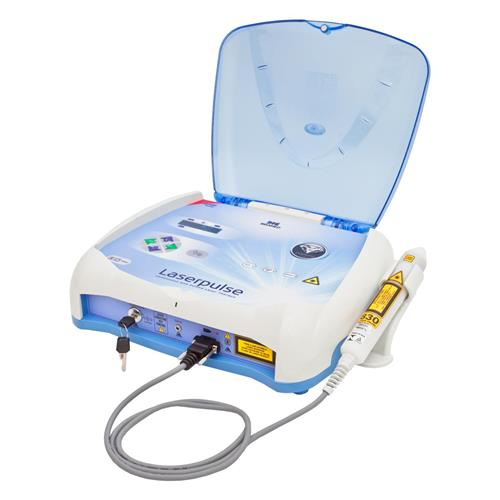
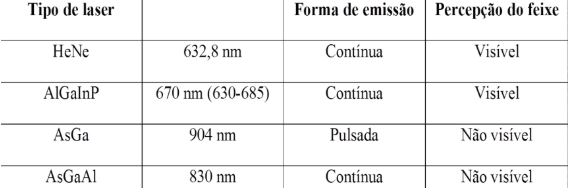
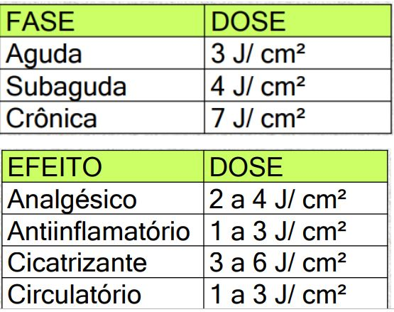

Laser
Definição
{{objeto_laser.definicao}}
Propiedades
Monocromaticidade
{{objeto_laser.Monocromaticidade}}
Colimação
{{objeto_laser.Colimacao}}
Coerência
{{objeto_laser.Coerencia}}
Interação Laser-Tecido
{{objeto_laser.interacao}}
- Dispersão da luz incidente:{{objeto_laser.dispersao}}
- Absorção da luz incidente por um cromóforo:{{objeto_laser.absorcao}}
{{objeto_laser.modos}}
Efeitos Fisiológicos
Efeitos Diretos
{{objeto_laser.efeitos}}
Efeitos Indiretos
{{objeto_laser.efeitosindiretos}}
Tipos de Laser
- {{objeto_laser.tipo1}}
- {{objeto_laser.tipo2}}
- {{objeto_laser.tipo3}}
Laser de Baixa Potência

Técnicas de Aplicação
Pontual e Varredura.
Indicações
{{objeto_laser.indicacao}}
- {{objeto_laser.indicacao1}}
- {{objeto_laser.indicacao2}}
- {{objeto_laser.indicacao3}}
- {{objeto_laser.indicacao4}}
Contraindicações
- {{objeto_laser.contraindicacao1}}
- {{objeto_laser.contraindicacao2}}
- {{objeto_laser.contraindicacao3}}
- {{objeto_laser.contraindicacao4}}
Efeitos Terapêuticos
- {{objeto_laser.terapeuticos1}}
- {{objeto_laser.terapeuticos2}}
- {{objeto_laser.terapeuticos3}}
- {{objeto_laser.terapeuticos4}}
Dosagem e Parâmetros de Irradiação
{{objeto_laser.dosagem}}

Observação:
{{objeto_laser.obs}}